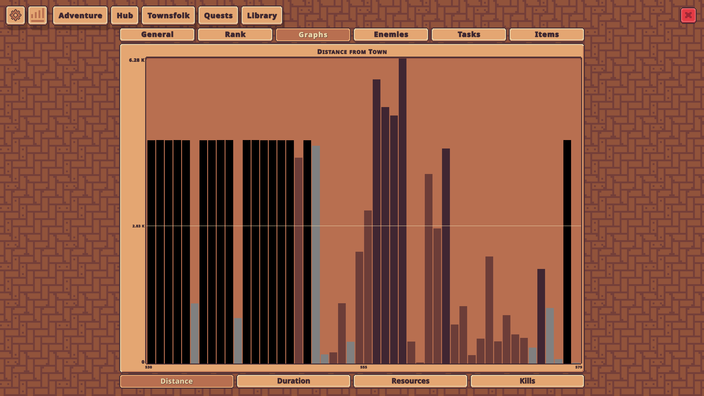
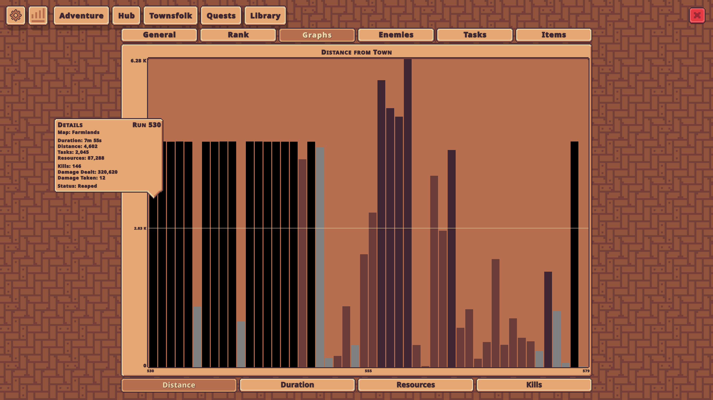
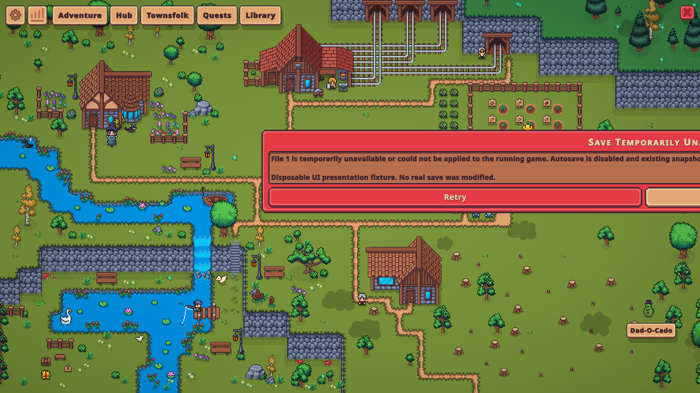
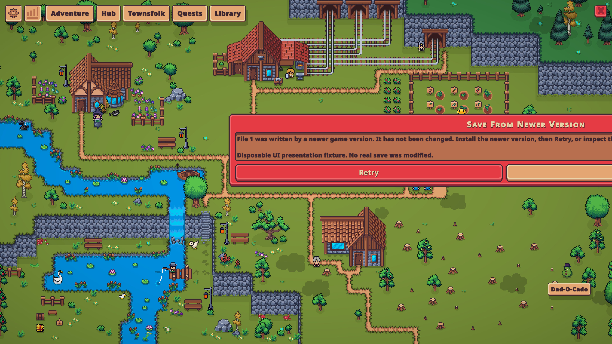
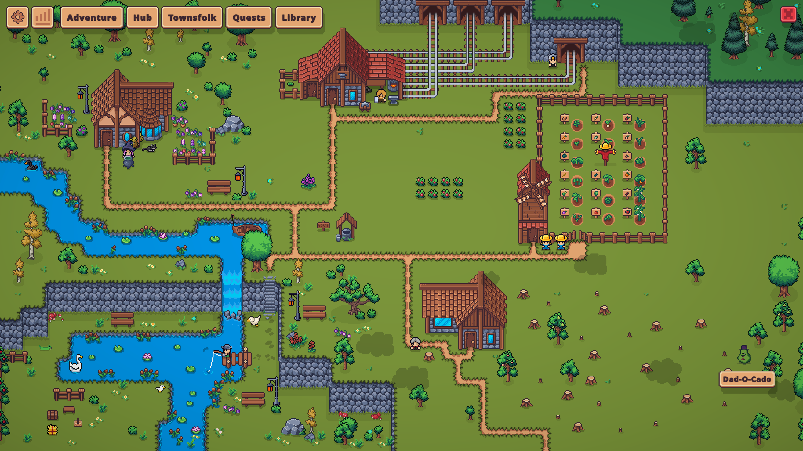
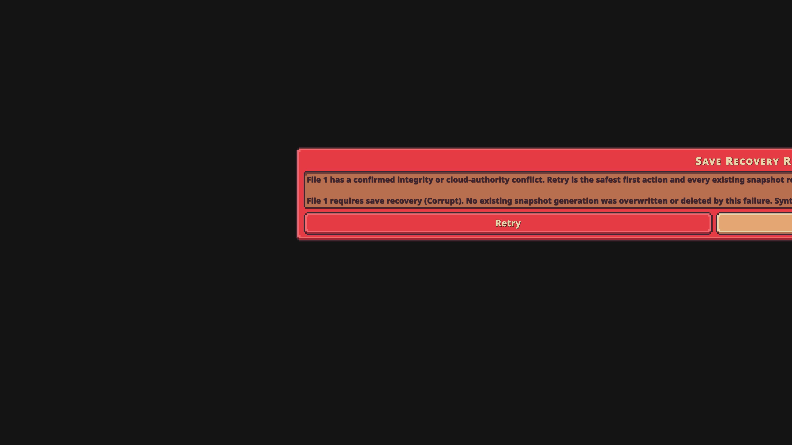

01-populated-run-graph
developed-copy — Reviewed contact sheet; presentation reference only.

developed-copy — Reviewed contact sheet; presentation reference only.

developed-copy — Recorded run hover visible; uses serialized runBars references.

synthetic-dialog-only-no-recovery-action — LIMITED: real recovery text/buttons visible, but forced in Main scene and extends off-screen. Loading-scene layout remains unvalidated.
synthetic-dialog-only-no-recovery-action — LIMITED: real recovery text/buttons visible, but forced in Main scene and extends off-screen. Loading-scene layout remains unvalidated.

synthetic-dialog-only-no-recovery-action — LIMITED: real recovery text/buttons visible, but forced in Main scene and extends off-screen. Loading-scene layout remains unvalidated.

developed-copy — Reviewed contact sheet; presentation reference only.

synthetic RequireRecovery(Corrupt) through actual Loading transition; no recovery action clicked; offline disposable copy — VALID existing defect: actual Loading transition still leaves recovery dialog outside right screen edge; no recovery action clicked.
